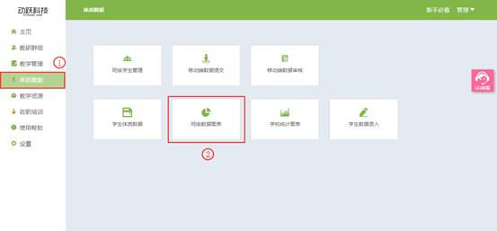

班级数据图表
视频教程：
根据学生各项指标成绩换算得分，以雷达图表的方式，直观显示学生身体素质及运动健康素质。教师持续跟踪学生身体发展趋势，还可切换为个人展示，班级展示，全校展示，以满足不同层级需求的监管及报告。
1. 登录动跃体育教学管理平台后，进入平台操作界面。
2. 点击进入体质数据 > 点击班级数据报表按钮，如下图:

3. 在班级体质数据查看页面，点击选择需要查看的数据条件，选择完成后，在下方显示所选择项目图表数据对比。页面右上角的<数据导出>按钮，教师可以导出到本地，更加方便的对比学生的信息，可用于展示、讲解与分析学生体质数据。

4. 点击详细指标内容，即可查看该项目的具体图表数据对比，点击【所有】按钮，所有项目指标数据图表分析展示在这一页面上，往下滑动即可查看。班级数据图表直观展示整个班级、整个年级或全校学生的单项素质分析及总成绩结果。<数据导出>按钮，教师可以导出到本地，更加方便的对比学生的信息，可用于展示、讲解与分析学生体质数据。